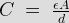
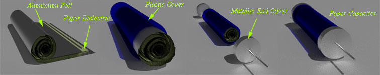
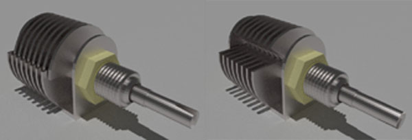
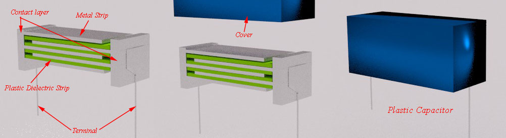
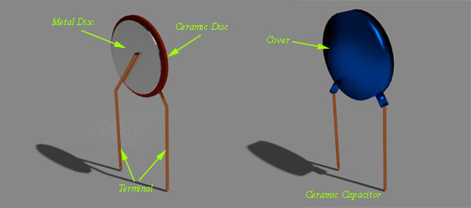

General uses of Capacitors
Charging a Capacitor
Types of Capacitors
Paper Capacitor
Air Capacitor
Plastic Capacitor
Plastic Film Capacitor
Silvered Mica Capacitor
Ceramic Capacitor
Mixed Dielectric Capacitor
Electrolyte Capacitor
We are now all very much familiar with the fact that static charges can be generated very easily, if we can somehow apply sufficient frictional force between two bodies under consideration. For example, pulling a transparent tape off a roll results in the separation of small amounts of positive and negative charge, which can be accumulated separately within the two bodies. This particular phenomena gave rise to the concept of capacitors, which is simply a device for charge storage.
The earliest written account of charging by friction dates back as far as the 6th Century BC, when a Greek scientist named Thales of Miletus noted that, a piece of amber rubbed with animal fur acquired the ability to pick up small bits of material. This is the result of charged particles For the next 2 million years, wherever the subjects of electricity were studied, two different materials had to be taken and rub together to create a separated island of positive and negative charges.
Now coming straight to Eighteenth Century Europe, where electricity was one of the major hot topics in the field of Research and development, and many inventions were done with electrostatic machines that generated charge by friction.
While friction is an easy and inexpensive mean to separate charge for use in electric experiments, the amount of charge available was quite small. If electricity was going to be anything other than an irritating side effect of walking on the carpet, some means for increasing the amount of charge available for experiments had to be found.
The first device for storing charge or a capacitor was discovered in the winter of 1745-46 by two electricians working independently:
Firstly Dr. Ewald Georg von Kleist a scientist from Poland built a device, consisted of a medicine bottle; partly filled with water and sealed with a cork. A nail was then pushed through the cork into the water. Now holding the bottle in one hand, the nail was brought in contact with the terminal of an electrostatic machine which allowed it to acquire charge for some time. Then, when Dr. Von Kleist touched the nail to remove it from the stopper while still holding the bottle, the separated charges were able to reunite by flowing through his body, and he received a bitter shock, which later went on to become one of the biggest boons for mankind.
Simultaneously; another scientist from Holland, Sir Pieter Van Musschenbroek built his own device, and the experiences with it were almost the same as von Kleist's, but with three major exceptions.
Firstly, a visiting student Andreas Cunaeus to Pieter van’s laboratory made the shocking discovery,not van Musschenbroek himself. Secondly, he made many significant improvements to the device; one of them being, removal of water and then wrapping the jar with metallic foil, inside out. And thirdly, he wrote to his colleagues to tell them all about his new discovery. It was from this point, that the world came to know about capacitors, and later on several papers were published and scientists all over the globe studied about the capacitance of an electrical circuit at large, to develop a modern day capacitor, that we encounter these days.
So, to store more energy in a capacitor, the voltage across the element must be increased. This essentially means that more electrons will be added to the negative plate, which is at the expense of electrons being taken away from the positive plate, thus necessitating a flow of current from the positive to negative direction.
Conversely, the reverse is also true, as to release energy from a capacitor; the voltage across it must be reduced sufficiently. This means some of the excess electrons on the negative plate must be returned to the positive plate, thus reducing the value of current flowing through the element.
What is Capacitor?
Capacitor is a passive element that stores electric charge statistically and temporarily as an static electric field. It is composed of two parallel conducting plates separated by non-conducting region that is called dielectric, such as vacuum, ceramic, air, aluminum, etc.
The capacitance formula of the capacitor is represented by,

C is the capacitance that is proportional to the area of the two conducting plates (A) and proportional with the permittivity ε of the dielectric medium. The capacitance decreases with the distance between plates (d). We get the greatest capacitance with a large area of plates separated by a small distance and located in a high permittivity material. The standard unit of capacitance is Farad, most commonly it can be found in micro-farads, pico-farads and nano-farads.
General uses of Capacitors
- Smoothing, especially in power supply applications which required converting the signal from AC to DC.
- Storing Energy.
- Signal decoupling and coupling as a capacitor coupling that blocks DC electric current and allow AC electric current to pass in circuits.
- Tuning, as in radio systems by connecting them to LC oscillator and for tuning to the desired frequency.
- Timing, due to the fixed charging and discharging time of capacitors.
- For electrical power factor correction and many more applications.
Charging a Capacitor
Capacitors are mainly categorized on the basis of dielectric used in them. During choosing a specific type of capacitors for a specific application, there are numbers of factors that get considered. The value of capacitance is one of the vital factors to be considered. Not only this, many other factors like, operating voltage, allowable tolerance stability, leakage resistance, size and prices are also very important factors to be considered during choosing specific type of capacitors.
We know that capacitance of a capacitor is given by,

Hence it is cleared that, by varying ε, A or d we can easily change the value of C. If we require higher value of capacitance (C) we have to increase the cross-sectional area of dielectric or we have to reduce the distance of separation or we have to use dielectric material with stronger permittivity.
If we go only for the increasing area of cross-section, the rise of the capacitor may become quite large; which may not be practically acceptable. Again if we reduce only the distance of separation, the thickness of dielectric becomes very thin. But the dielectric cannot be made too thin in case its dielectric strength in exceeded.
Types of Capacitors
The various types of capacitors have been developed to overcome these problems in a number of ways.
Paper Capacitor
It is one of the simple forms of capacitors. Here, a waxed paper is sandwiched between two aluminium foils.
Process of making this capacitor is quite simple. Take place of aluminium foil. Cover this foil with a waxed paper. Now, cover this waxed paper with another aluminium foil. Then roll up this whole thing as a cylinder. Put two metal caps at both ends of roll. This whole assembly is then encapsulated in a case. By rolling up, we make quite a large cross-sectional area of capacitor assembled in a reasonably smaller space.

Air Capacitor
There are two sets of parallel plates. One set of plates is fixed and another set of plates is movable. When the knob connected with the capacitor is rotated, the movable set of plates rotates and overlapping area as between fixed and movable plates vary. This causes variation in effective cross-sectional areas of the capacitor. Consequently, the capacitance varies when one rotates the knob attached to the air capacitor. This type of capacitor is generally used to tune the bandwidth of a radio receiver.

Plastic Capacitor
When various plastic materials are used as dielectric material, the capacitors are said to be plastic capacitors. The plastic material may be of polyester, polystyrene, polycarbonate or poly propylene. Each of these materials has slightly different electrical characteristics, which can be used to advantage, depending upon the proposed application.
This type of capacitors is constructional, more or less same as paper capacitor. That means, a thin sheet one of the earlier mentioned plastic dielectrics, is kept between two aluminium foils. That means, here the flexible thin plastic sheet is used as dielectric instead of waxed paper. Here, the plastic sheet covered by aluminium foil from two sides, is first rolled up, then fitted with metal end caps, and then the whole assembly is encapsulated in a case.
Plastic Film Capacitor
Plastic capacitor can be made also in form of film capacitor. Here, thin strips or films of plastic are kept inside metallic strips. Each metallic strip is connected to side metallic contact layer alternatively; as shown in the figure below. That means, if one metallic strip is connected to left side contact layer, then the very next is connected to right side contact layer. And there are plastic films in between these metallic strips. The terminals of this type of capacitors are also connected to side contact layer and whole assembly is covered with insulated non metallic cover as shown.

Silvered Mica Capacitor
A silvered mica capacitor is very accurate and reliable capacitor. This type of capacitors has very low tolerance. But on the other hand, cost of this capacitor is quite higher compared to other available capacitors in the market. But this high cost capacitor can easily be compensated by its high quality and performance. A small ceramic disc or cylinder is coated by silver compound. Here, electrical terminal is affixed on the silver coating and the whole assembly is encapsulated in a casing.
Ceramic Capacitor
Construction of ceramic capacitor is quite simple. Here, one thin ceramic disc is placed between two metal discs and terminals are soldered to the metal discs. Whole assembly is coated with insulated protection coating as shown in the figure below.

Mixed Dielectric Capacitor
The way of constructing this capacitor is same as paper capacitor. Here, instead of moving waxed paper as dielectric, paper impregnated with polyester is used as dielectric between two conductive aluminium foils.
Electrolyte Capacitor
Very large value of capacitance can be achieved by this type of capacitor. But working voltage level of this electrolyte capacitor is low and it also suffers from high leakage current. The main disadvantage of this capacitor is that, due to the use of electrolyte, the capacitor is polarized. The polarities are marked against the terminals with + and – sign and the capacitor must be connected to the circuit in proper polarity.
A few micro meter thick aluminium oxide or tantalum oxide film is used as dielectric of electrolyte capacitor. As this dielectric is so thin, the capacitance of this type of capacitor is very high. This is because; the capacitance is inversely proportional to thickness of the dielectric. Thin dielectric obviously increases the capacitance value but at the same time, it reduces working voltage of the device. Tantalum type capacitors are usually much smaller in size than the aluminium type capacitors of same capacitance value. That is why, for very high value of capacitance, aluminium type electrolyte capacitors do not get used generally. In that case, tantalum type electrolyte capacitors get used.
Aluminium electrolyte capacitor is formed by a paper impregnated with an electrolyte and two sheets of aluminium. These two sheets of aluminium are separated by the paper impregnated with electrolyte. The whole assembly is then rolled up in a cylindrical form, just like a simple paper capacitor. This roll is then placed inside a hermetically sealed aluminium canister. The oxide layer is formed by passing a charging current through the device, and it is the polarity of this charging process that determines the resulting terminal polarity that must be subsequently observed. If the opposite polarity is applied to the capacitor, the oxide layer is destroyed.
| Material | Dielectric constant | Dielectric Strength Volts/.001 inch |
|---|---|---|
| Air | 1 | 80 |
| Paper(Oiled) | 3-4 | 1500 |
| Mica | 4-8 | 1800 |
| Glass | 4-8 | 200 |
| Porcelain | 5 | 750 |
| Titanates | 100-200 | 100 |
CAUTION: NEVER DISCHARGE A CAPACITOR WHILE IT IS CONNECTED TO THE CIRCUIT VOLTAGE, WHETHER THE VOLTAGE SOURCE IS A BATTERY OR AC POWER.
 by
by